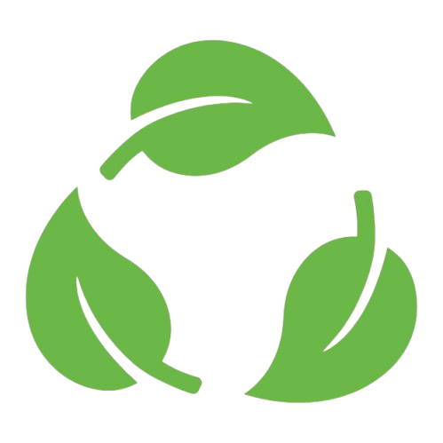

Tecnologia e Sustentabilidade
Um estudo sobre a integração entre inovação tecnológica e preservação ambiental
Introdução
Nas últimas décadas, a sustentabilidade ganhou destaque nas organizações devido ao esgotamento dos recursos naturais e à crescente preocupação social e ambiental. Ao mesmo tempo, a revolução tecnológica impulsionou o consumismo e o desperdício, agravando os impactos ambientais.
Com as mudanças climáticas se tornando evidentes, cresce a pressão para que empresas adotem práticas sustentáveis, não apenas por consciência, mas como exigência estratégica. Nesse cenário, surgem movimentos “verdes” e iniciativas como a “TI Verde”, que incentivam o uso de tecnologias mais limpas e responsáveis.
Organizações como o Greenpeace têm atuado ativamente, avaliando e pressionando empresas a adotarem medidas como reciclagem, redução de poluentes e transparência. Essa transformação representa uma nova postura corporativa, onde sustentabilidade é sinônimo de inovação, responsabilidade e competitividade.

Objetivos do Projeto
Desenvolver uma solução digital que una teoria e prática para promover a sustentabilidade, utilizando tecnologias acessíveis e incentivando a consciência ambiental, a inovação e a responsabilidade social.
- Pesquisar soluções tecnológicas sustentáveis;
- Mapear demandas ambientais que possam ser atendidas digitalmente;
- Criar um site educativo com ferramentas open source;
- Medir o impacto da plataforma com testes e feedbacks.
Tecnologias Verdes

Energias Renováveis
Análise das principais fontes de energia limpa e seu potencial para redução de emissões.

Reciclagem Tecnológica
Inovações no processo de reciclagem e gestão de resíduos eletrônicos.

Gestão Hídrica
Tecnologias para monitoramento e preservação dos recursos hídricos.
Impacto Ambiental

Mudanças Climáticas
Análise do papel da tecnologia no combate às mudanças climáticas.
Recursos Hídricos
Impacto da tecnologia na gestão e preservação da água.
Resíduos Eletrônicos
Desafios e soluções para o descarte adequado de lixo eletrônico.
Metodologia
Pesquisa
A metodologia adotada foi exploratória e qualitativa, com base em literatura especializada e dados institucionais entre 2005 e 2024. Foram consultadas bases como IEEE Xplore, Scopus, Google Scholar e ScienceDirect, além de relatórios técnicos e publicações de órgãos como IBGE, INPE, ONU e Agência Europeia do Meio Ambiente.
Análise
A partir da pesquisa, desenvolvemos um site com foco em sustentabilidade, aplicando princípios de design responsivo, acessibilidade digital e uso de ferramentas open source. A plataforma oferece conteúdos educativos e soluções tecnológicas acessíveis, demonstrando como a tecnologia pode ser usada para gerar impacto social e ambiental positivo.
Conclusão
A integração entre tecnologia e sustentabilidade representa uma estratégia
essencial para enfrentar os
desafios
ambientais do presente e do futuro. O desenvolvimento do site “Tecnologia e Sustentabilidade” evidenciou
que é possível
utilizar a inovação tecnológica como aliada na preservação dos recursos naturais, por meio de soluções
como tecnologias
verdes, digitalização ambiental, economia de baixo carbono e logística reversa. Ao apresentar esses
conteúdos de forma
didática e acessível, o projeto contribui para a conscientização da sociedade e reforça o papel
transformador da ciência
da computação em prol do desenvolvimento sustentável.
Além de ampliar o conhecimento técnico, essa iniciativa reforça a importância da atuação ética e
consciente dos
profissionais da área tecnológica. Diante de questões urgentes como as mudanças climáticas, o descarte
inadequado de
resíduos eletrônicos e a demanda por fontes de energia limpas, é fundamental repensar modelos de
produção e consumo.
Práticas como a economia circular, a eficiência energética e o design responsável devem orientar novas
soluções
digitais, capazes de construir um futuro mais justo, inclusivo e resiliente.
Referências
Bibliografia
- SILVA, J. A. Tecnologias Verdes: Inovação e Sustentabilidade. 2023
- SANTOS, M. Impacto Ambiental da Tecnologia. 2022
- OLIVEIRA, R. Desenvolvimento Sustentável. 2023